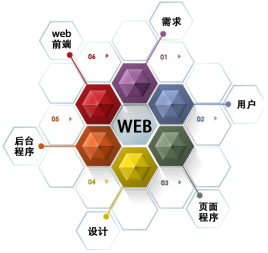

什么是全栈工程师
全栈工程师是指掌握多种技能，并能利用多种技能独立完成产品的人。也叫全端工程师(同时具备前端和后台能力)，英文Full Stack developer。
价值
全局性思维
现代项目的开发，需要掌握多种技术。互联网项目，需要用到后端开发、前端开发、界面设计、产品设计、数据库、各种移动客户端、三屏兼容、restFul API设计和OAuth等等，比较前卫的项目，还会用到Single Page Application、Web Socket、HTML5/CSS3这些技术以及像第三方开发像微信公众号微博应用等等。
Web前端也远远不是从前的切个图用个jQuery上个AJAX兼容各种浏览器那么简单了。现代的Web前端，你需要用到模块化开发、多屏兼容、MVC，各种复杂的交互与优化，甚至你需要用到Node.js来协助前端的开发。
所以说一个现代化的项目，是一个非常复杂的构成，我们需要一个人来掌控全局，他不需要是各种技术的资深专家，但他需要熟悉到各种技术。对于一个团队特别是互联网企业来说，有一个全局性思维的人非常非常重要。
沟通成本
项目越大，沟通成本越高，做过项目管理的都知道，项目中的人力是1+1<2的，人越多效率越低。因为沟通是需要成本的，不同技术的人各说各话，前端和后端是一定会掐架的。每个人都会为自己的利益而战，毫不为己的人是不存在的。
而全栈工程师的沟通成本几乎为零，因为各种技术都懂，胸有成竹，自己就全做了。即使是在团队协作中，与不同技术人员的沟通也会容易得多，让一个后端和一个前端去沟通，那完全是鸡同鸭讲，更不用说设计师与后端了。但如果有一个人懂产品懂设计懂前端懂后端，那沟通的结果显然不一样，因为他们讲的，彼此都能听得懂。
创业公司
对于创业公司来说，全栈工程师的价值是非常大的，创业公司不可能像大公司一样，各方面的人才都有。所以需要一个多面手，各种活都能一肩挑，独挡多面的万金油。对于创业公司，不可能说DBA前端后端客户端各种人才全都备齐了，很多工作请人又不饱和，不请人又没法做，外包又不放心质量，所以全栈工程师是省钱的一妙招。虽然说全栈工程师工资会比一般的工程师会高很多，但综合下来，成本会低很多。
困境
技术有两个发展方向，一种是纵向一种是横向的，横向的是瑞士军刀，纵向的是削铁如泥的干将莫邪。这两个方向都没有对与错，发展到一定程度都会相互溶合。可以说全栈什么都会，但又什么都不会。
如果一个公司不太懂全栈工程师的价值，那么全栈工程师的地位将会很尴尬，说得不好听一点，全栈工程师就是什么都会，什么都不会。曾经有一次面试，对方问很基础的问题，他答不上来，但他能做出产品，也知道什么是怎么一回事，他也不会犯那些错误，可他就是答不上概念，要考倒他非常容易。所以在应聘面试的时候，有些时候会吃亏，他可能会不如那些在某一方面钻得很深的人工资拿得高。
所以说一个现代化的项目，是一个非常复杂的构成，我们需要一个人来掌控全局，他不需要是各种技术的资深专家，但他需要熟悉到各种技术。对于一个团队特别是互联网企业来说，有一个全局性思维的人非常非常重要。